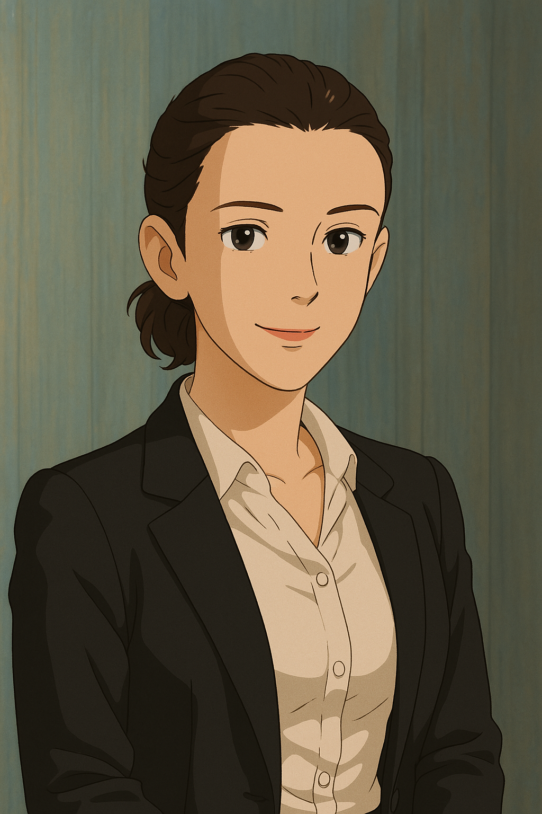
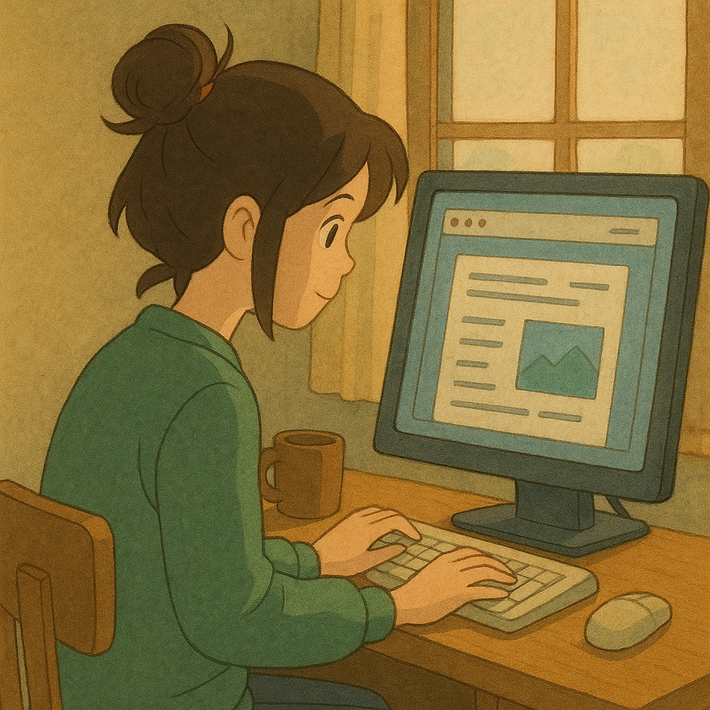
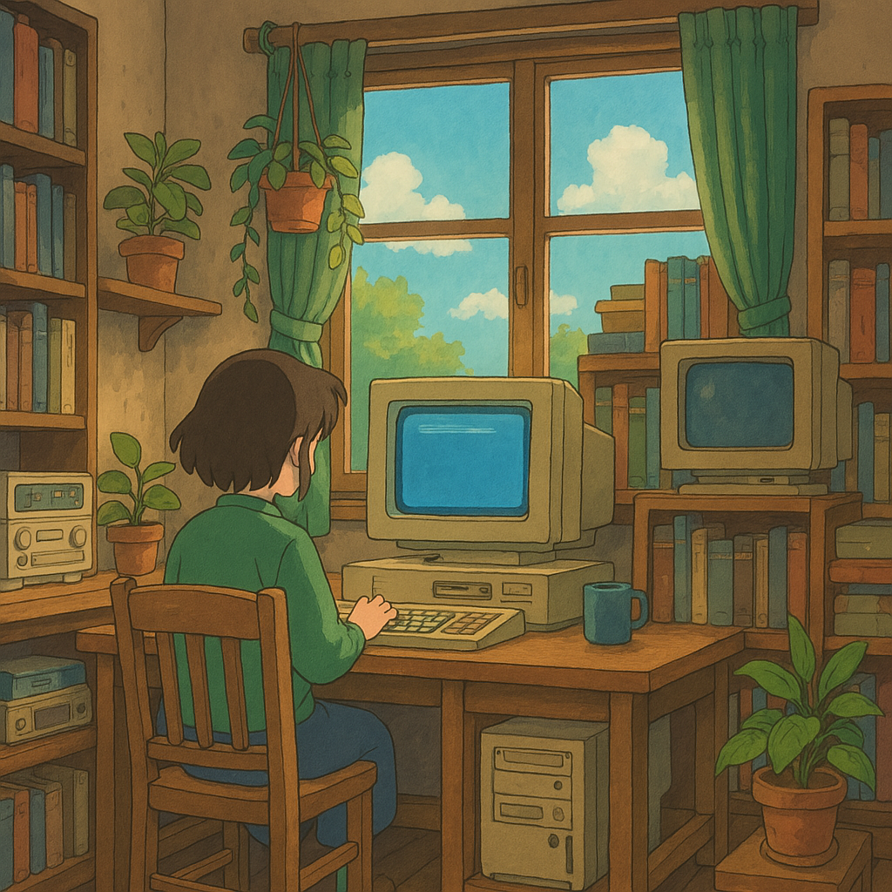

Sobre mí
Soy Agostina, una apasionada por la tecnología y la creatividad. Me encanta aprender, experimentar y hacer que las ideas se conviertan en algo real. Como desarrolladora, mi misión es hacer cosas que sirvan, que estén bien pensadas y que hagan la vida un poco más fácil, o al menos más linda.
Proyectos
Mi primer sitio web
Usé HTML y CSS para crear una página con diseño responsivo y estilo propio.
Sitio interactivo
Experimenté con Flexbox y animaciones para lograr una experiencia fluida e intuitiva.
Habilidades
- HTML
- CSS
- Git & GitHub
- JavaScript (en curso)
- React (quiero aprender)
- Node.js (me interesa aprender)
Contacto
Tus datos fueron enviados exitosamente